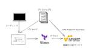

フューチャー技術ブログ
https://future-architect.github.io/
フューチャーの開発者による公式技術ブログです。業務で利用している技術を幅広く紹介します。
フィード

手動運用しているCloudflareをTerraformでInfrastructure as Codeする
フューチャー技術ブログ
<h2 id="はじめに"><a href="#はじめに" class="headerlink" title="はじめに"></a>はじめに</h2><p>この記事は、<a
1日前


Terraformの実装コードを、動かしながら読む 1
1
フューチャー技術ブログ
<img src="/images/20240326a/top.png" alt="" width="800" height="539"><p><a href="/articles/20240311a/">Terraform連載2024</a>
2日前

Azure環境Terraform実行におけるリソースプロバイダーについて
フューチャー技術ブログ
<img src="/images/20240325a/top.png" alt="" width="800" height="515"><p><a href="/articles/20240311a/">Terraform連載2024を</a>
3日前

爆速習得、初心者からRustの即戦力を備えるまで 2
フューチャー技術ブログ
<h2 id="背景"><a href="#背景" class="headerlink" title="背景"></a>背景</h2><p>週末を利活用したく、新しい言語をゼロから学習して即戦力を備えるまでどのぐらいかかるかを実験してみました。</p><h4
6日前
Terraform連載2024 テストとモックを使ってみる 2
フューチャー技術ブログ
<img src="/images/20240321a/top.png" alt="" width="800" height="555"><p><a href="/articles/20240311a/">Terraform連載2024を</a>
7日前

cfn-guardを使ってTerraformをポリシーチェックしようとした話
フューチャー技術ブログ
<p><a href="/articles/20240311a/">Terraform連載2024を</a> の6本目です。</p><h2 id="導入"><a href="#導入" class="headerlink"
10日前
サービスの多国展開を支えるTerraform構成 1
フューチャー技術ブログ
<img src="/images/20240315a/image.png" alt="" width="1088" height="542" loading="lazy"><p><a
13日前

Terraform連載2024 Stateを統合してみる
フューチャー技術ブログ
<p><a href="/articles/20240311a/">Terraform 連載2024</a>の4本目です。</p><h2 id="はじめに"><a href="#はじめに" class="headerlink"
14日前
Terraform連載2024 Terraformにおける変数の制御について
フューチャー技術ブログ
<img src="/images/20240313a/terraform_top.png" alt="" width="900" height="628"><p><a href="/articles/20240311a/">Terraform
15日前
Terraform連載2024 hclwriteを用いたtfコード生成入門
フューチャー技術ブログ
<p><a href="/articles/20240311a/">Terraform 連載2024</a> の2本目の記事です。</p><h2 id="はじめに"><a href="#はじめに" class="headerlink"
16日前
Terraform連載2024を開始します & TerraformにおけるDR戦略を考える
フューチャー技術ブログ
<img src="/images/20240311a/terraform.png" alt="" width="800" height="418"
17日前
Goリリースノートから技術ブログを書く流れ基礎
フューチャー技術ブログ
<img src="/images/20240307a/image.png" alt="" width="1200" height="818" loading="lazy"><p>The Gopher character is based on the Go mascot
21日前
Next.jsにするか他のフレームワークにするか迷っている人はNext.jsを選べばいい
フューチャー技術ブログ
<img src="/images/20240228a/top.jpg" alt="" width="640"
1ヶ月前
AWS Lambdaのランタイムを provided.al2023 に更新する際、2バイナリをzipして対応してみた
フューチャー技術ブログ
<h2 id="はじめに"><a href="#はじめに" class="headerlink" title="はじめに"></a>はじめに</h2><p>TIG真野です。</p><p>2023年末にAWS Lambda界隈で話題だった「AWS LambdaのGo
1ヶ月前
MacをWindows/Linux風な操作感にする、Hammerspoonで始める環境構築
フューチャー技術ブログ
<h1 id="はじめに"><a href="#はじめに" class="headerlink" title="はじめに"></a>はじめに</h1><p>こんにちは。最近自宅チェアをバランスボールにして体幹を鍛えている、HealthCare Innovation
1ヶ月前
【Firebase】GDG Tokyo Monthly Online Tech Talksに登壇しました
フューチャー技術ブログ
<img src="/images/20240221a/image.png" alt="image.png" width="660" height="270" loading="lazy"><h1 id="はじめに"><a href="#はじめに"
1ヶ月前
社内LANで必要かもしれないLocalstackへのカスタムCA証明書ダウンロード手順
フューチャー技術ブログ
<img src="/images/20240220a/localstack.png" alt="" width="800" height="400"><h1 id="はじめに"><a href="#はじめに" class="headerlink"
1ヶ月前
2024年 フューチャー技術ブログリレー企画
フューチャー技術ブログ
<img src="/images/20240219a/16635b2c-ebe0-4421-9aae-f0aab18d45f3.jpeg" alt="" width="700" height="700"
1ヶ月前
LocustとGKEでスケーラブルな負荷テスト
フューチャー技術ブログ
<h2 id="はじめに"><a href="#はじめに" class="headerlink" title="はじめに"></a>はじめに</h2><p>本記事では、負荷テストツールである<a href="https://locust.io/">Locust</a>と<a
1ヶ月前
龍が如く7のすごいテストをなぜ我々は採用できないのか
フューチャー技術ブログ
<p>僕自身は龍が如くシリーズは、クロヒョウ2、極1、極2、０、3、4、5、6、0とやって、7はRPGだし主人公違うしなぁと思って、買うだけ買って後でやろうと積んでいたところ、CEDECのすごいテストの話を聞いて、（オリジナル版を積んでいたのに)インターナショナル版を買って始めて
1ヶ月前
Go 1.22リリース連載 net, net/http, net/netip
フューチャー技術ブログ
<img src="/images/20240214a/top.png" alt="" width="800" height="534"><p>The Gopher character is based on the Go mascot designed by Renée
1ヶ月前
ダイアログもアラートも、Reactで子コンポーネントの開閉管理を実装する
フューチャー技術ブログ
<p>Reactでは、画面に関わる表示の制御はかならず何かしらのステート管理を行いそれで行います。ダイアログの場合は開閉をuseState()で作ったフラグで管理するみたいな感じです。</p><p>たとえば、ウェブブラウザのJavaScriptから呼べる<code>alert(
2ヶ月前
30種類のプログラミング言語で、ループ処理を書いてみた
フューチャー技術ブログ
<img src="/images/20240206a/top.png" alt="" width="1000" height="695"><h2 id="はじめに"><a href="#はじめに" class="headerlink"
2ヶ月前